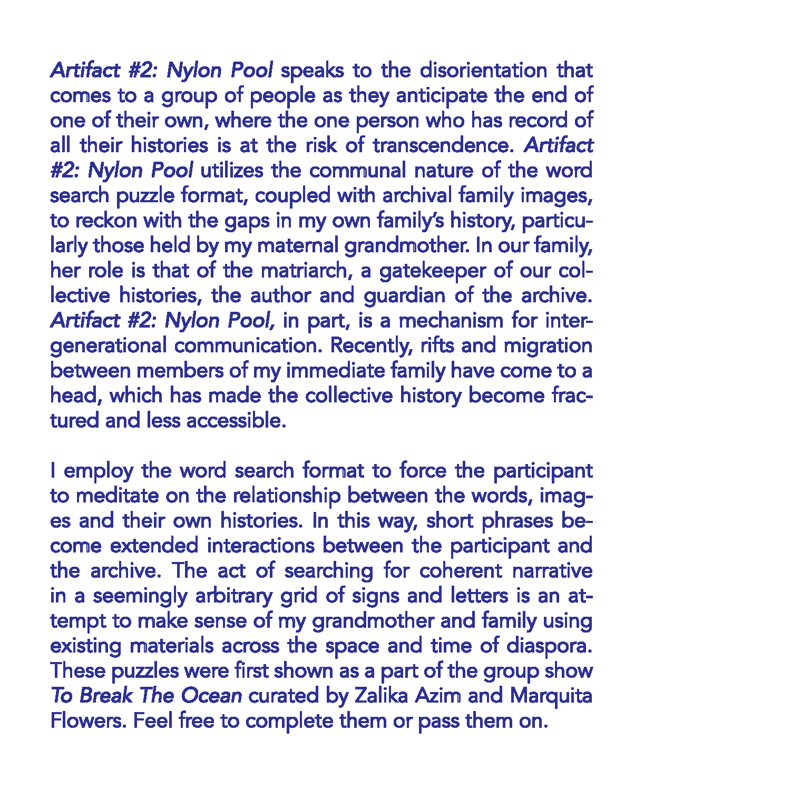
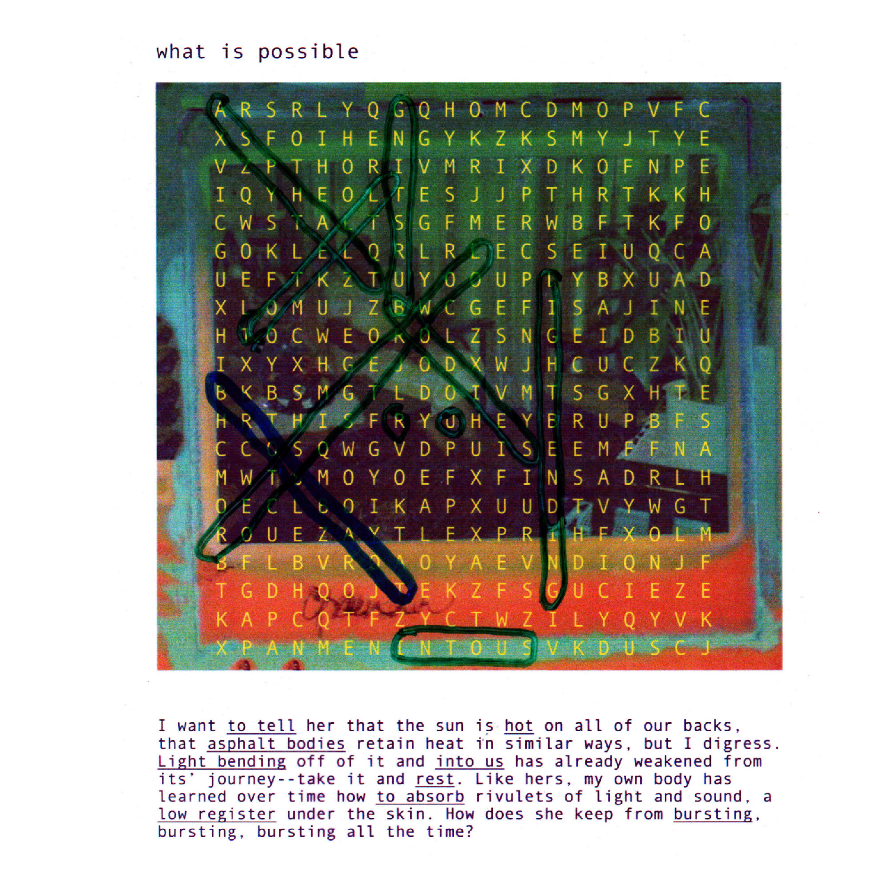
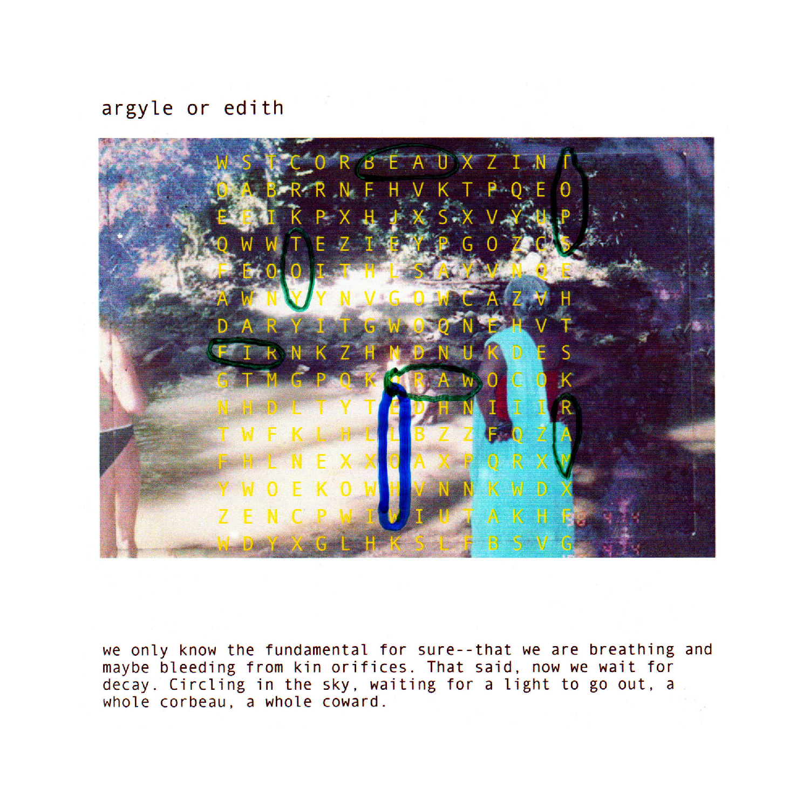
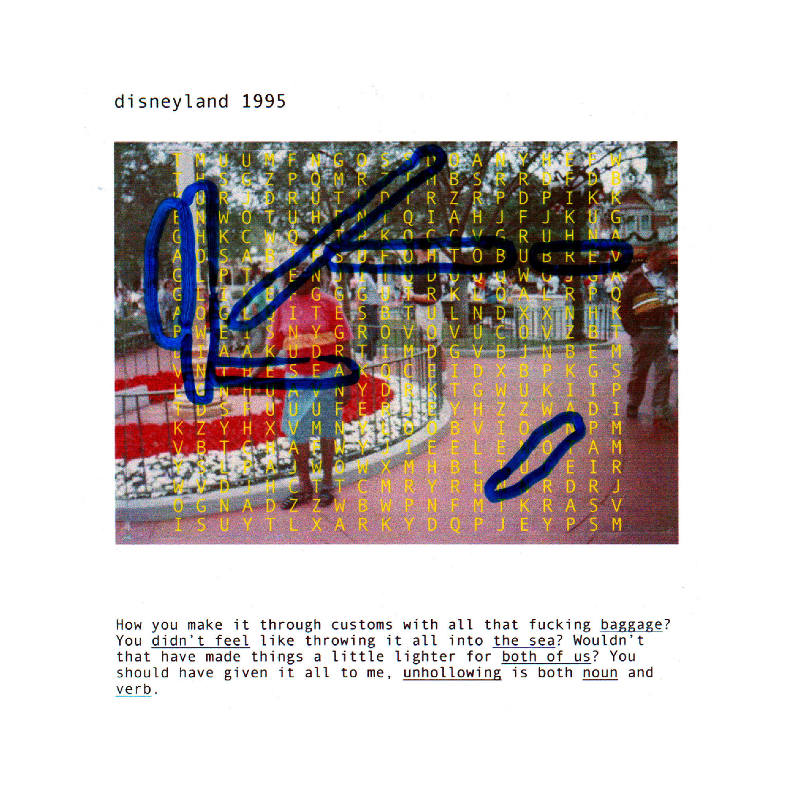
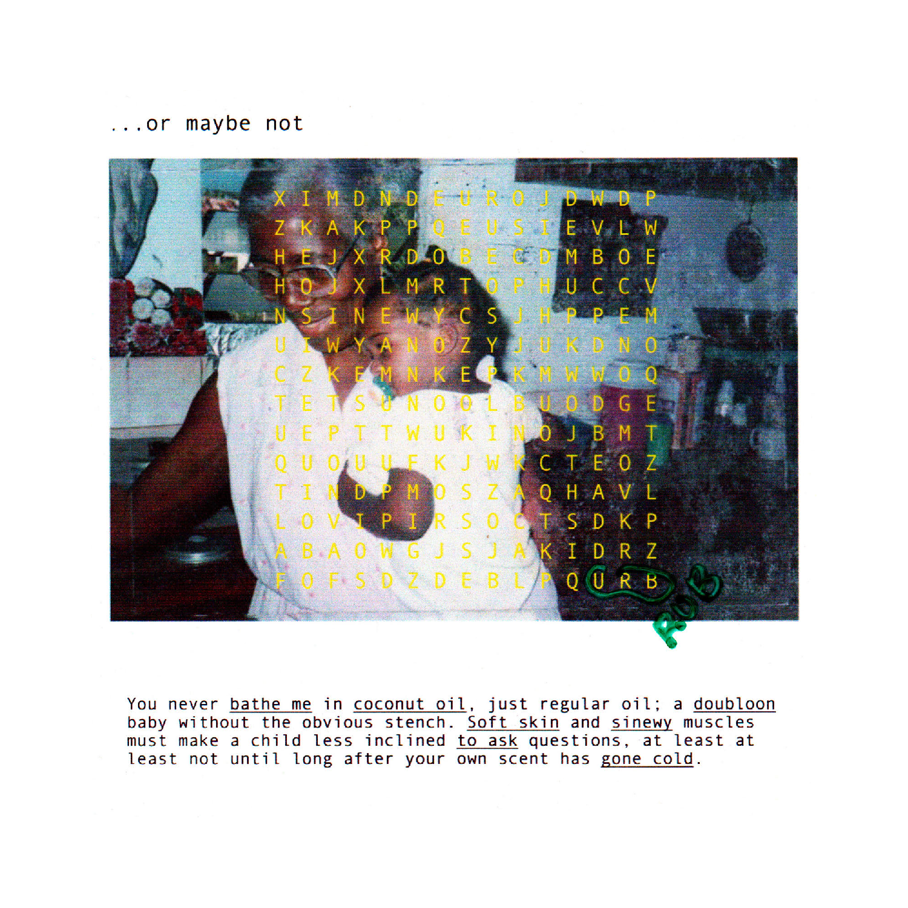
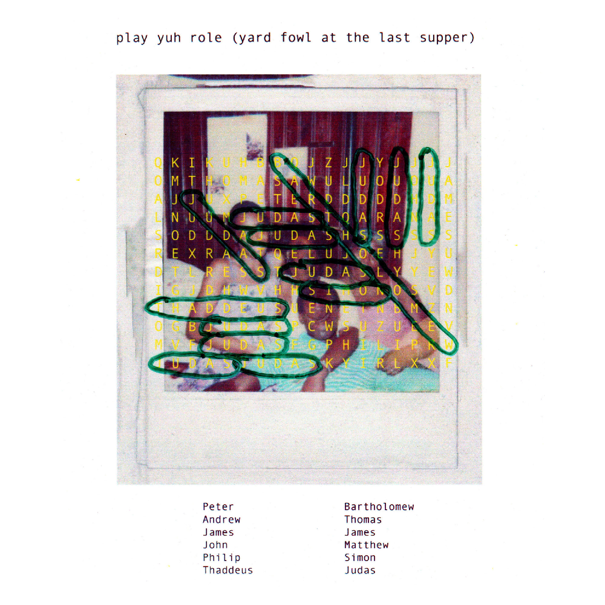
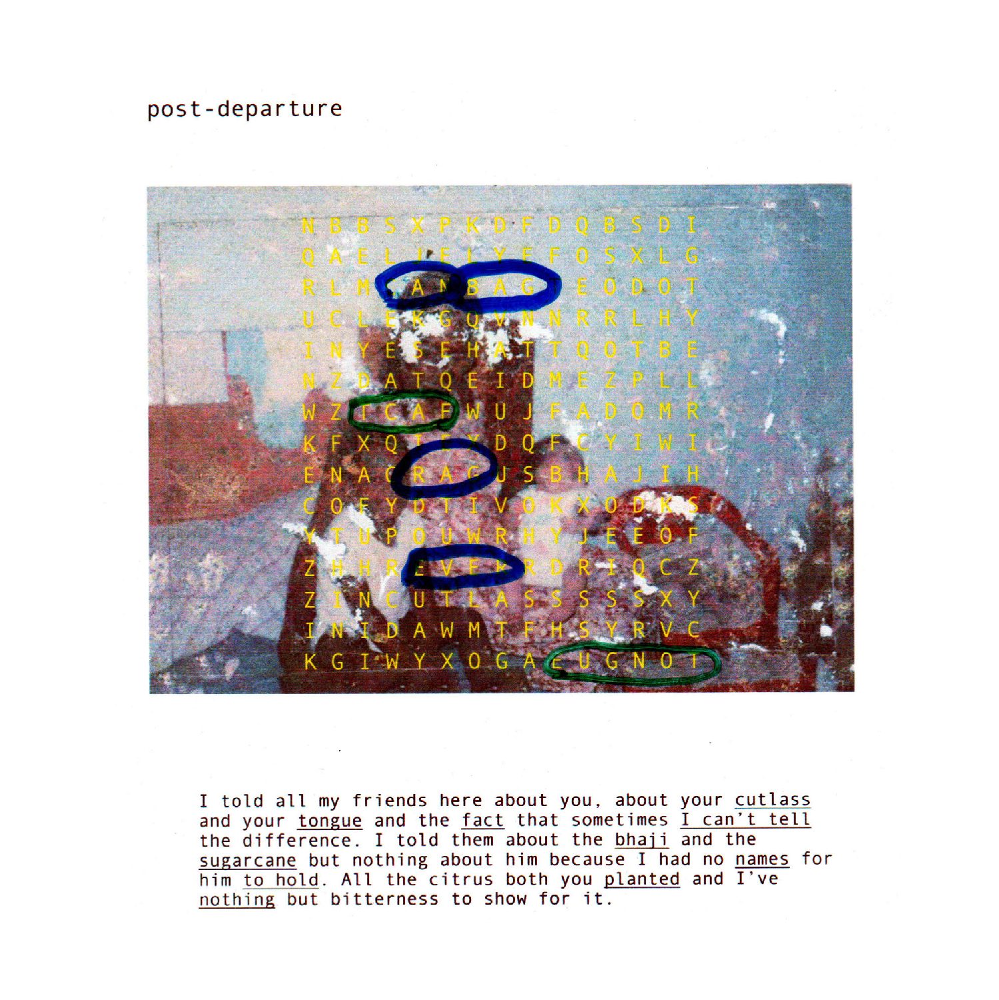
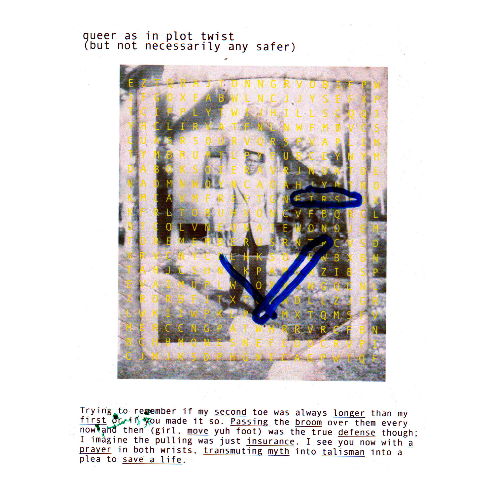
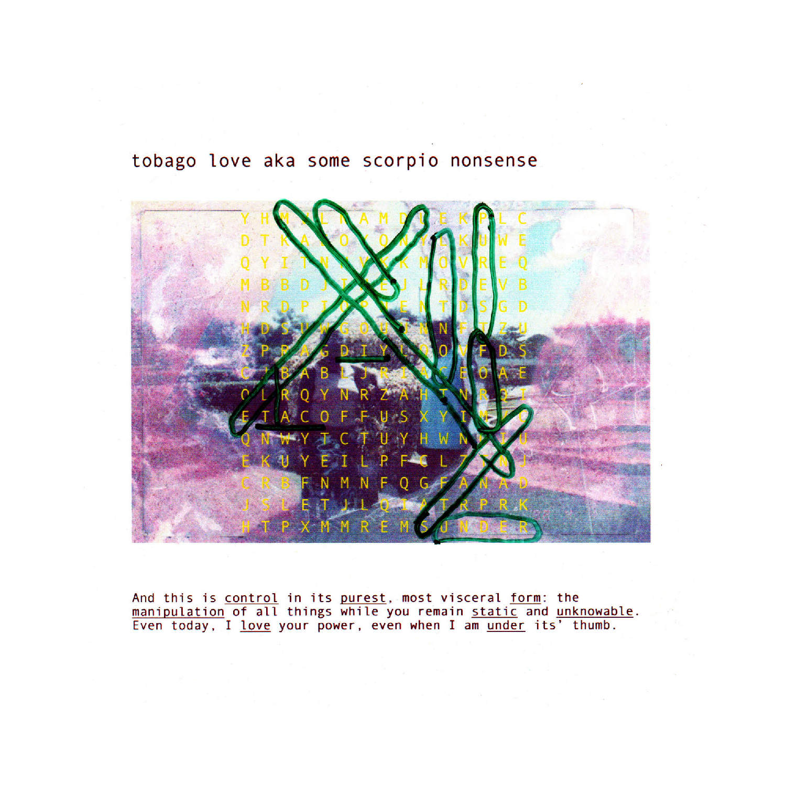
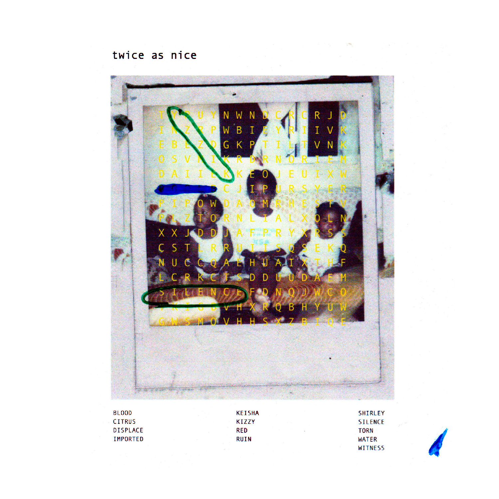

Did you grow up in Tel Aviv?
Kearra Amaya Gopee
K.A.G.
Kimi Hanauer
K.H.
Yeah, until we moved to the United States in 2003.
OK, cool.
What about you? When did you move?
I was born in Miami, and I stayed there till I was 3. And then we left for Trinidad with my mom and my brother. And yeah, I just came back to the U.S. when I was 18 to New York City and I never came back in between.
What made you move to Trinidad from Miami?
Well the first thing I heard was like, they (my parents) were doing this “reverse-immigrant” thing… They were like, “We are going to take our kids back to Trinidad because these American schools are too lax! They are going to have my children thinking about things like feelings and there are so many ways for them to go astray! Lemme just send them straight back to Trinidad, to thrive in that post-colonial bliss.” So we went home. But then like, three years ago, I found out that my mom couldn’t actually leave Trinidad—my father still has all of her travel documents. That’s why we were there that long and I didn’t know.
So she’s there now?
Yeah she’s there.
And your dad?
No, he’s in Miami. He was just like, “Yeah I don’t want your mom in the United States, I don’t want you all in the United States.” He would come to visit when we were in Trinidad and I just didn’t know that they had all this beef back then.
What is something that makes you feel free?
Free to me just means to do whatever the fuck you want. I feel most free when I say what’s on my mind—because it took me awhile to get here. I’m not really that person, never used to be that person. I used to be very quiet about what I’m doing and how I feel about things. I never thought that my opinion was valid or whatever. It took me awhile to get to this point where I can say what I like and not take it back. I just feel good when I tell people how I feel about something right away, in the moment. So that’s when I feel free.
Do you ever feel like saying what you really think, like how you really feel in the moment, is kind of out of place in the United States culturally? Like, it’s not very polite to say what you actually think, you know? To me, one of the first things I realized about coming here was that there was a different definition of what’s rude and what’s acceptable.
Yes. Look ... when I first moved here, I wasn’t as outspoken as I am now. But I was still like, just casually, “This is what I think about this.” just not as intensely as I do now. Americans used to be shook—and I was like, “What? I’m just saying what’s happening, how is that fucked up?” And they would be like, “You know, sometimes the way that you say things can be very aggressive … ” Like oh, shit, all right. So I scaled it back for a while, and now I’m selectively as open as I want to be depending on the audience I am interacting with. I just notice a different cultural standard of operating. So it's just like, OK cool—even though you all [Americans] could probably benefit from being straight up sometimes … Y’all get yourselves into some sticky situations if you would just … But OK, I got it, sure, I’m on your playing field.
The other thing you're reminding me of now is how violence is portrayed here. Obviously, the United States is really violent, but there’s—at least with imagery in mainstream media—there’s a different type of standard in how those things are portrayed.
Yeah, totally. In Trinidad, they are very bold about violence in mainstream media. I think the internet caused that too. Honestly, I feel as if a lot of that was the internet because Trinidad—and you know, we are technically a first-world nation by ”economic” standards—and other countries that fall into the same social-economic bracket just aspire to Americanness so bad that we’ve adapted our media and imagery to match. We’re not as conservative about image anymore because the American media is so saturated with violence, it's like we’re playing catch-up. Like, you wouldn’t really put a headless body on the front page of the newspaper here in the United States. I feel like the United States has a very particular type of visual violence. It’s fascinating because it's so calculated. Like with us it's just about shock value, shock value, shock value. With them it's like, we’ll show you this but under that, there’s this, and under that, and under that.

Taneshia on Utica, 2015, by Kearra Amaya Gopee.
What has been your experience with American rhetoric around race? For example, language like the word “person of color” is so rooted in American history of organizing, and doesn’t always translate clearly within a global context.
As I was growing up in Trinidad, I had all these thoughts like, “Why does life here look this way? Why is gender operating this way? Why are we not talking about race in this particular manner?” I had all these ideas about race in my head that I didn’t have the language to express to anyone because we don’t talk about race constructively. We don’t talk about it. We are a majority-Black and -Brown nation [in Trinidad] and we don’t talk about race outside of using it as a tool to describe people or as a point of antagonism.
And here race, and its inextricable link to class, is the number one system of oppression.
Yeah, it’s the defining thing. I mean, we talk about it, but very rarely. Like when we are promoting ourselves for tourism, “We are a rainbow nation, there’s all these types of people here living in harmony, we all have all these religions and come from all these places and we just manage to make it work, welcome to Trinidad!” I was just like OK, yeah… But can we talk about the fact that Indian immigrants that came to Trinidad operate—in relationship to how it works in the United States—as white, or that they aspire to Western whiteness? Can we honestly discuss how whiteness and capitalism is what drives wedges between us? Can we talk about how whiteness makes that possible? We don’t talk about that. There’s friction between Black people and Indian people in Trinidad, those are the two majority peoples. There’s so much strife between them.
I went to a prestigious secondary school in Central Trinidad, where I am from, and the majority of people there were of East Indian descent. That was a moment for me to be like, “Why do certain people get to go to prestige schools and why don’t more of them look like me?” On the contrary, the majority of the people who go to the government schools all look like me. There’s still a hierarchy. And when I see Trinidadian immigrants in the U.S. of all races, I often see them style themselves after a shallow, exported American identity. It wasn’t until I moved here that I got language for this, and then I felt like, OK now I understand that people are also thinking about these things and I’m not just crazy. But then it became more complicated when I was just like, why the fuck am I talking about this within an American context? How can I organize anything? This is not the language necessary for this landscape. It has to be contextually driven—we can’t talk about POC and Black folks the same way we talk about them in North America because a lot of organizers in Trinidad also do that, and it fucks them up.
Like saying “person of color” as a general term?
Yeah, POC as a general term or, with them it's more like discourse around feminism. Like taking from Black American feminist movements wholesale, or trying to place it within a Trinidadian context, but it doesn’t always work. They are like, “Why doesn’t this work here?” Well, because it's not the same place. I mean you can definitely be inspired by [those ideas], but you always have to make that work site-specific.
Especially when race is differently defined in different contexts.
Yeah. Recently, there was this episode of Parts Unknown with Anthony Bourdain on Trinidad and people were sending him messages like, “Thanks for showing us in this great light, this is really us, this is great.” I was just like fuck this. Trinidadians take any scraps from white people. But then there was a general uproar across the country because in the episode, Syrian folks and Lebanese folks told Bourdain that they feel as if there will be a middle-class uprising because the middle class in Trinidad is falling apart. For context, this middle class consists mainly of Black and Indian people while the Syrian and Lebanese community definitely occupy a more privileged place in our society as they have major stakes in most large-scale businesses in Trinidad and Tobago. They told him that they were scared of there being civil chaos, and said there isn’t a buffer in the middle class anymore to prevent us from rising against them. And it was just like, you need to hear them say that on record to believe that that’s what they were saying about you all this time? Everyone was mad about it, and it's just like, this is an opportunity for new discourse around race in this country because we don’t do it! Also, this has been happening for a very long time and you know it, you make jokes about it, you talk about it in schools and homes all the time, and now you are upset? We let it run amok. And now we are just looking for words to describe how we feel about this thing. And amongst all of this, there’s even white Trinidadians [like children of white expats who were raised there, for example] who are like, “I can’t believe that people hate me just because of the color of my skin, and I do believe that I am Trinidadian.” Yeah, you are Trinidadian but also race is a thing. Trinidadian is a nationality. Stop trying to make it into something that it’s not. We are all here on different terms. And we live under terms that were originally set by whiteness. So let's be real about it. You are who you are and you can do what you can do because of it. It’s a hot mess.
What are some things that you do to sustain your own spirit and health?
I am still learning to take care of myself. It’s hard. In my mind, work has always been taking care of myself; work, and work, and work, and work, so I would feel secure financially, that I am sustaining my life. I used to be so obsessed with work and I started feeling like, OK, this is how I sustain myself but also it’s killing me, so what am I really doing? So recently I’ve been like, “Girl, just sit the fuck down….” I just make time to sit and read like I used to, I started a 50-book challenge for the summer. Fifty Black books challenge.
What does sanctuary mean to you? Do you feel like it’s something that has ever manifested in your life?
Yeah, there’s many different ways of conceptualizing sanctuary. To me, it's like being in the bushes, being at home, to me that’s what feels like sanctuary. It’s a mobile thing for me too; it’s about who you surround yourself with. I’m very selective about who I keep around me, and I don’t do superficial friendships, I don’t have the energy to sustain that. So part of me making a sanctuary is about making sure that I have the energy to sustain my life, and so I need people around me that can make me happy and comfortable.
When it comes to a more physical sanctuary, I was thinking about building a residency program in Trinidad. I want it to be in a house with a cute gallery on a nice flat piece of land that I own—that’s my sanctuary goal for the next 10 years. I would only charge foreigners. Local residents can come for free. I want to have it in the countryside because the art community in general is so centered in the city. There are people making great things all over these islands.
darryl (looking in the water for someone who isn't you), 2017, by Kearra Amaya Gopee.
Do you feel like immigrating has affected your familial relationships?
Yeah, that’s been something I’ve been dealing with my whole life. Even when I moved away, I had a different connection with my family, because I was born in the United States and they would never stop reminding me that I am not from here. So I would always overcompensate. I used to be so obnoxiously Trinidadian because they made me feel like I’m not for some reason. I couldn’t help that, it’s not my fault.
There is such a violence to that, when someone—especially someone close to you—tells you, “This is what you are.”
Yeah. People closest in age to me were like, “I am more Trinidadian than you.” My older cousins—I used to look up to them so much, and they would just always reject me. Sometimes they would be cool be with me, and I would feel really hopeful, like OK, I’m fitting in, and then they would just expunge me, and it would be based on that nationality.
There were other things too. My mom is a really unconventional mother. Like, she is Trinidadian, yes, but she was into all sorts of things and I always had a really experimental outlook. If I was interested in something, my mother would be like, “Yeah sure, let’s try it.” [My cousins] didn’t get that, because they grew up in Trinidad and there are just so many ideas about what you should and shouldn’t do. My mom wasn’t like that for some reason. And because I had that much freedom in deciding what I wanted to do and because I was a good student, they would just be like, OK you're not actually Trinidadian because we don’t do that. I’ve always had a strange relationship with my cousins and my family. I mean, there was always like 10 to 14 people in the house and even with those odds in my favor, I still didn’t really fit in. So I became used to feeling kind of alone in a very populated place. Even now, I am still the odd one out but I’m not as bothered by it, it’s really not any of our faults.
Yeah, I understand.
Here, clearly I’m Trinidadian because you don’t understand my fucking accent.
It’s also such a nationalist thing to be like, what? You can’t be multiple things, multiple nationalities?
Exactly. Nationality is a trap.
Something I’ve been thinking about is the term “your people,” or “my people.” And thinking about how to define who “your people” are. I don’t think it has to have anything to do necessarily with nationality, for example. Just because someone speaks the same language as you, it doesn’t mean they speak your language, you know?
Yes, it doesn’t mean they are here for you. There are entire Venn diagrams of people, like there are so many different circles and all of that constitutes who your people are. I had to realize that no one people can be everything you need. Like, you have to have so many different facets of yourself that need to be addressed. People are mad complicated and I wish we would make more room for that. I guess that is coming into popular consciousness, though, the idea that you can be complicated.
If you had to define “your people” by any terms, even just one characteristic, what would you say?
My people are open to movement. My people are really flexible. There are people in my circle who know what it is like to be displaced in many different ways. So it's not necessarily by geography; it can be by family relationships, for example. I always have a kinship with people who have been through some type of displacement. Trauma. I feel that immediately, and I’m like OK, yeah sure, I get you fundamentally. I embody several different types of displacement. Deliberate and not deliberate. I feel it in a bunch of ways. My people are people who know how to adapt. And pull no punches. People who listen. My people listen. You just have to be able to listen.
International Panorama (Silver Stars), 2016, by Kearra Amaya Gopee.
Do you ever feel like you have to essentialize yourself or your experience in some way in order to sustain yourself?
Girl, I am pushing back against that so much. Like when you have to boil yourself down to the bare bones of who you are for a selling point, for your work. It's wild to me when people do that, but they do it because that’s the only way white people will accept or attempt to understand what they are doing. And it’s so complicated. I can’t do that. It’s psychologically damaging.
It makes me sad. Black folks here often have to do that shit. No, you are complex and I am so mad that whiteness has made it so, for you to survive in capitalism, you have to play into this thing and boil yourself down to nothing. And it’s just like damn, I get it but, I really can’t do it. I’m not gonna sit and just talk about this Caribbean shit. I can’t give you a piece of this without giving you a piece of something else. It’s all interlocking, it’s ridiculous. I don’t want do it. The prospect of it depresses me. It’s going to be really rough doing this, but I think it's necessary for my sanity.
I guess the thing is, OK, so how do you navigate this and take steps to expand it? How do we talk about identity in a more thoughtful way?
I think it’s transparency. People need to be transparent about what is happening to them because of whiteness. Hannah Black, I always talk about her essay on gossip. I think gossip is essential for surviving this shit. Gossip is technically women’s work.
And patriarchy made it so it is a vilified thing, that it's aggressive, but it's necessary for building something outside of ourselves and outside of the system. We need to tip each other off, so you know the red flags, you know what’s up. If you have some information, pass it along. It's just information exchange.
Is there anything else you feel is important to share?
Yes. A PSA: I do not hate Trinidadians. We are just very complicated, OK? Give yourself credit. Don’t take it as beef, y’all. Let’s be honest with ourselves. There are things we can fix. Don’t come up in my inbox being ridiculous. Thank you, have a good day.










Download the full zine here.